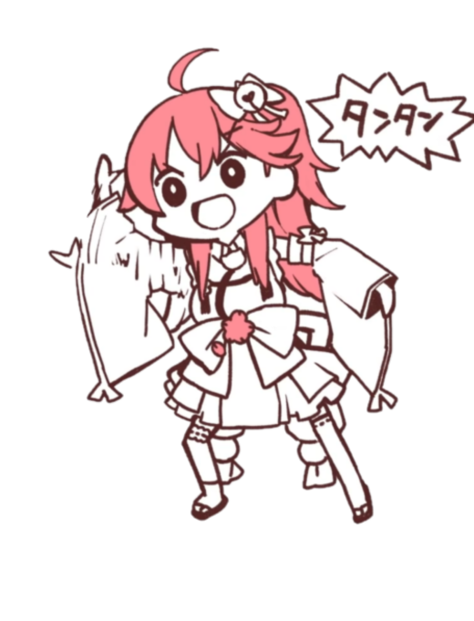

 「にゃっはろー！さくらみこだよ～！」
「にゃっはろー！さくらみこだよ～！」
🌸介紹
櫻巫女在電腦世界中是侍奉神明的巫女，在受神的請託下前往日本拜訪。
拜訪期間，她決定成為虛擬巫女偶像，而每天持續努力著。最喜歡的東西是鯛魚燒和Galgame，自稱自己是「菁英」巫女。
因本人說話不清楚，導致只有極為少數的人聽得懂因而有「櫻語」一詞。
櫻巫女剛開始活動時主要以投稿短片以及夾雜著零星直播為主，加入Hololive後轉以直播為主。她的角色設計者為田中雄一，新衣的設計者則為おるだん 粉絲團名為35P（みこぴー)
🌸經歷
2018年
8月1日，在YouTube上傳第一支影片
8月28日，初次直播&YouTube訂閱人數突破1千
12月25日，發表加入hololive，並轉以直播為主
2019年
1月24日，YouTube訂閱人數突破1萬紀念直播
4月18日，YouTube訂閱人數突破2萬
5月22日，YouTube訂閱人數突破3萬紀念直播
6月8日，YouTube訂閱人數突破4萬紀念直播
7月9日，YouTube訂閱人數突破5萬紀念直播
8月16日，YouTube訂閱人數突破6萬紀念直播
10月6日，YouTube訂閱人數突破7萬紀念直播
12月8日，3D新衣服首次發表
12月10日，YouTube訂閱人數突破10萬紀念直播&銀盾達成
2020年
1月24日，在豐洲PIT舉辦的hololive 1st fes.『ノンストップ・ストーリー』出演
2月4日，YouTube訂閱人數突破13、14萬紀念直播
2月14日，YouTube訂閱人數突破15萬紀念直播
3月16日，YouTube訂閱人數突破20萬
6月7日，YouTube訂閱人數突破30萬
7月1日，YouTube訂閱人數突破35萬
7月31日，因身體不適，進入大概1-2個月活動限制期
8月3日，YouTube訂閱人數突破40萬
8月30日，YouTube訂閱人數突破45萬
10月1日，YouTube訂閱人數突破50萬
10月21日，以live方式正式回歸
11月7日，YouTube訂閱人數突破60萬
12月8日，YouTube訂閱人數突破70萬
2021年
1月15日，YouTube訂閱人數突破80萬
2月28日，YouTube訂閱人數突破90萬
3月6日，3D新衣裝發布
4月30日，YouTube訂閱人數突破100萬
7月3日，YouTube訂閱人數突破110萬
8月28日，發佈第四首原創單曲《花月ノ夢》，同日YouTube訂閱人數突破120萬🌸音樂-個人單曲